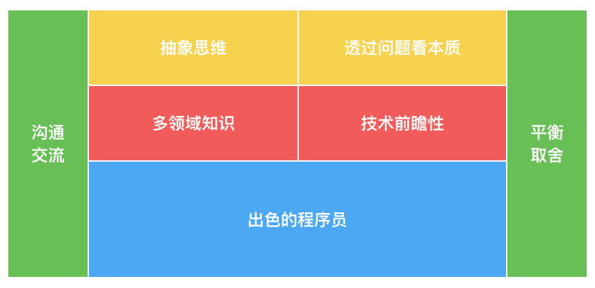
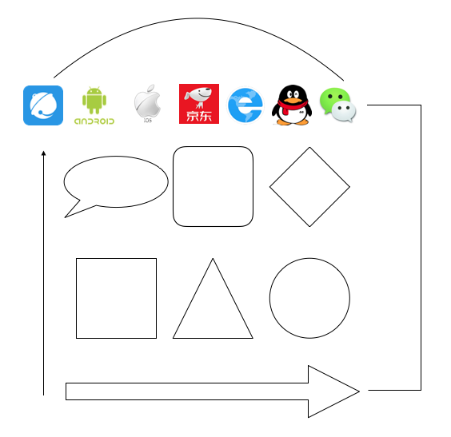
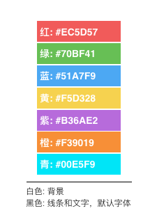
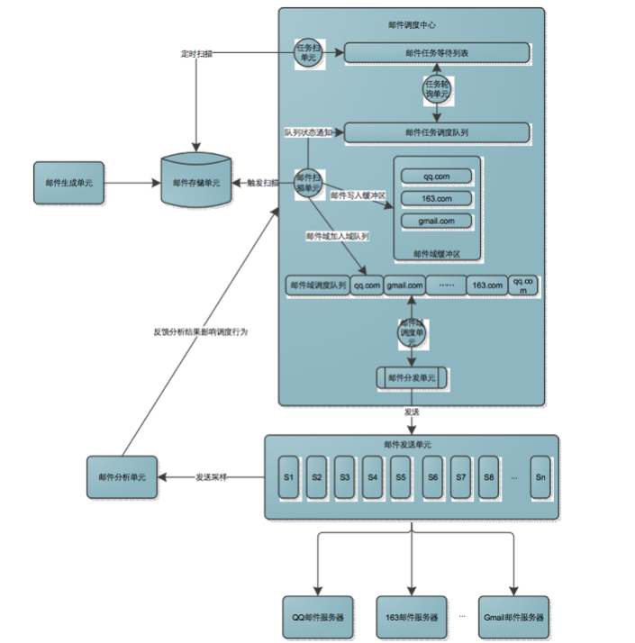
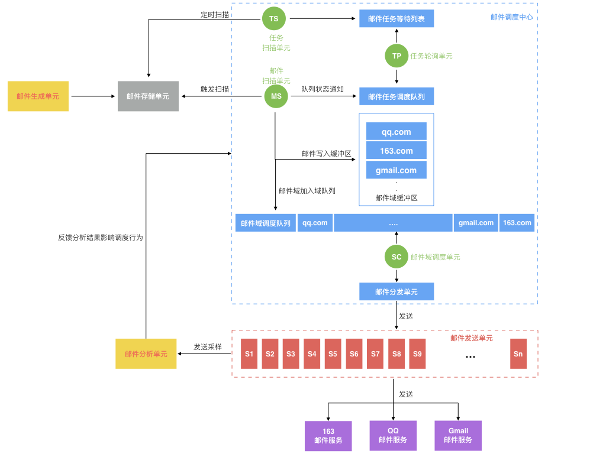

- 00 开篇词 程序行知：走在同样的路上，遇见自己的风景.md.html
- 01 初心：为什么成为一名程序员？.md.html
- 02 初惑：技术方向的选择.md.html
- 03 初程：带上一份技能地图.md.html
- 04 初感：别了校园，入了江湖.md.html
- 05 架构与实现：它们的连接与分界？.md.html
- 06 模式与框架：它们的关系与误区？.md.html
- 07 多维与视图：系统设计的思考维度与展现视图.md.html
- 08 代码与分类：工业级编程的代码分类与特征.md.html
- 09 粗放与精益：编程的两种思路与方式.md.html
- 10 炫技与克制：代码的两种味道与态度.md.html
- 11 三阶段进化：调试，编写与运行代码.md.html
- 12 Bug的空间属性：环境依赖与过敏反应.md.html
- 13 Bug的时间属性：周期特点与非规律性.md.html
- 14 Bug的反复出现：重蹈覆辙与吸取教训.md.html
- 15 根源：计划的愿景——仰望星空.md.html
- 16 方式：计划的方法——脚踏实地.md.html
- 17 检视：计划的可行——时间与承诺.md.html
- 18 评估：计划的收获——成本与收益.md.html
- 19 障碍：从计划到坚持，再到坚持不下去的时候.md.html
- 20 执行：从坚持到持续，再到形成自己的节奏.md.html
- 21 信息：过载与有效.md.html
- 22 领域：知识与体系.md.html
- 23 转化：能力与输出.md.html
- 24 并行：工作与学习.md.html
- 25 时间：塑造基石习惯（上）——感知与测量.md.html
- 26 时间：塑造基石习惯（下）——切割与构建.md.html
- 27 试试：一种“坏”习惯.md.html
- 28 提问：从技术到人生的习惯.md.html
- 29 偏好：个人习惯的局限与反思.md.html
- 30 写作：写字如编码.md.html
- 31 画图：一图胜千言.md.html
- 32 演讲：表达的技术.md.html
- 33 定义：阶梯与级别.md.html
- 34 晋升：评定与博弈.md.html
- 35 关系：学徒与导师.md.html
- 36 核心：安全与效率——工程技术的两个核心维度.md.html
- 37 过程：规模与协作——规模化的过程方法.md.html
- 38 思维：科学与系统——两类问题的两种思维解法.md.html
- 39 职业倦怠：如何面对？.md.html
- 40 局部最优：如何逃离？.md.html
- 41 沟通之痛：如何改变？.md.html
- 42 技术停滞：如何更新？.md.html
- 43 无法实现：困扰与反思.md.html
- 44 完成作品：理想与现实.md.html
- 45 代码评审：寄望与哀伤.md.html
- 46 人到中年：失业与恐惧.md.html
- 47 该不该去创业公司？.md.html
- 48 该不该接外包？.md.html
- 49 技术干货那么多，如何选？.md.html
- 50 技术分歧，如何决策？.md.html
- 51 技术债务，有意或无意的选择？.md.html
- 52 选择从众，还是唯一？.md.html
- 53 选择工作，还是生活？.md.html
- 54 侠客行：一技压身，天下行走.md.html
- 55 江湖路：刀剑相接，战场升级.md.html
- 56 御剑流：一击必杀，万剑归心.md.html
- 57 三维度：专业、展现与连接.md.html
- 58 三人行：前辈、平辈与后辈.md.html
- 59 三角色：程序员、技术主管与架构师.md.html
- 60 三视角：定位、自省与多维.md.html
- 61 工作之余，专业之外.md.html
- 62 跨越断层，突破边界.md.html
- 63 成长蓝图，进化跃迁.md.html
- 尾声 始于知，终于行.md.html
- 捐赠
31 画图：一图胜千言
对于写作这种展现形式，有一种最好的补充手段就是画图。有时文字描述了半天还不如一张图来得清晰，正所谓：一图胜千言。这对于程序员特别需要的技术性文档或文章写作，都是最好的补充注解，有时甚至起到了画龙点睛的效果。
以前我在网上发一些技术博文，就常有读者留言问我是用什么工具画图的。其实我感觉他们很可能问错了问题，因为我曾经为了画好图尝试过各种不同的画图工具软件，但最后发现能不能画好图和工具的关系并不大。
一、为何？
程序员不是主要写代码的么，为什么需要画图？
有些程序员会认为写好代码就好，画好图有什么用？程序员成为架构师后是不是就天天画架构图，成为了所谓的 PPT 架构师？曾经读过一篇文章《在首席架构师眼里，架构的本质是…》，里面提出了一个架构师能力模型图，（我重新绘制）如下：

架构师能力模型图
结合我自己的经历和经验，这个能力模型针对架构师这个岗位来说还是比较符合的。程序员出色到了一定程度后想成长为一名架构师，就需要看看能力模型中的其他方面。而掌握好画图技法，对这个能力模型有什么帮助吗？
前面讲系统设计的文章《多维与视图》中我已经给出过结论：“用更系统化的视图去观察和思考，想必也会让你得到更成体系化的系统设计。”
在今天这个时代，我们都体验过各种各样的地图软件，一个国家，一个城市，一个街区，地图软件总是在不同的抽象维度上来展示地图。而对于一个复杂的软件系统，也需要类似的不同抽象维度：系统的全貌、不同子系统间的关联和交互、子系统内部模块间的接口和调用、某个关键实现点的处理流程等。一个架构师应该可以在这些不同的抽象维度上把系统或系统的一部分清晰地描绘出来。
而画图对于能力模型中的 “抽象思维” 就起到了一种锻炼，其作用就是帮助你在不同的层次上去思考系统设计，并具象化这个设计。既然具象化了设计，那么再基于此去沟通交流自是事半功倍。成为架构师之后，你自己明白还不是主要的，要让别人明白才更重要。
此外，站在一个多层次、全方位的系统架构图面前，在不同抽象维度上描绘了系统的各个重要方面，想必更容易看到问题的本质，也能更好地发现和找到系统的症结。如果解决系统的问题就像走迷宫，那么你是直接钻进去反复尝试寻找出路，还是站在更高的维度去俯视迷宫然后再找最佳的问题解决路径呢？
想必在更宏观和全局的视野下，与系统所有相关人员进行清晰准确地交流，直击问题本质，那么再进行正确而适当的技术决策与平衡取舍也没那么难了，对吧？至于 “多领域知识” 和 “技术前瞻性” 这两方面好像确实和画图的关联性不强，但如果“多领域知识”不限于程序技术领域，那画图也算一个领域的知识吧。
二、如何？
上一节探讨了画好图有什么益处，这一节我们看下如何画好图？画一个清晰易懂的技术架构或交互流程的说明图例需要什么专门的绘图知识与技巧么？另外为了画好图会花费大量的时间么？
过去几年在关于如何画好图这个课题上，我做了好些摸索和实践，想取得效率（即，画图花费的时间不会比用文字来描述同样的内容更多）和效果（即，图例表达的效果应该比文字描述更好）的平衡，在这个过程中我收获了下面一些基本认知和感觉还不错的实践方式。
1. 图形
我画技术图例时只会使用一些最基础的图形，比如：矩形、圆、三角、菱形、气泡、箭头，这些最基本的图形几乎所有的画图软件都会自带的，所以工具的依赖性很低，但真正画时的操作效率却又很高。
当然，一些著名外部系统可能都有各自知名的 Logo 图标，如果有时为了表达和这些著名外部系统间的交互，也会直接使用它们的 Logo 图标。如下面图示，就是我常用的一些画图图形元素。

我的一些常用画图元素
2. 颜色
有时系统的组成比较复杂，只用基本图形不足以表达所有不同的系统组成部件，这时就需要用颜色来区分了。
那么下一个问题就来了，该用哪些颜色呢？我的答案是使用大部分人觉得美的颜色。那大部分人觉得美的颜色是什么呢？彩虹色，当然这一点也我没有做过专门调查，只是凭经验得来。所以我一般用的颜色就是彩虹七色，外加两种经典色：黑、白。这样就有九种颜色加上好几种基本图形，可以组合出几十种表达不同组件的图形元素，基本也就够用了。
彩虹七色包括：红、橙、黄、绿、青、蓝、紫。但七种颜色的选择也是有优先级，在一本讲设计的书中 Designing with the Mind in Mind（中文译本《认知与设计》）提出了下面一些色彩使用准则：
- 使用饱和度、亮度以及色相区分颜色，确保颜色的高反差，因为人的视觉是为边缘反差而优化的。
- 使用独特的颜色，因为人最容易区分的颜色包括：红、绿、黄、蓝、白和黑。
- 避免使用色盲无法区分的颜色对，比如：深红－黑，深红－深绿，蓝色－紫色，浅绿－白色。
- 使用颜色之外的其他提示，对有颜色视觉障碍的人友好，而且也增强了可理解性。
- 避免强烈的对抗色，比如：红黑，黄黑。
以你看为什么交通灯是：红、黄、绿？为什么乔布斯选择这三个颜色作为 Mac 操作系统中所有应用窗体的按纽颜色，这也是暗合人类的视觉认知原则的。所以我现在多选择的是白底、黑字、黑色线条，色块优先选择红、绿、黄、蓝，实在不够用了才会选择橙、青、紫。
当然红有好多种红，绿有好多种绿，该用哪种呢？看下图所示，给出了 RGB 三原色的配色数值，这属于个人偏好，在 Mac 的显示器下看起来很舒服。但若用在其他场合，比如投影什么的，就可能需要根据投影实际效果进行微调了。

个人偏好的颜色配色参数
3. 审美
除了基本的图形和颜色选择之外，另外一个关注点是审美。
审美对最终的效果呈现有很大影响，这得感谢苹果总设计师乔纳森·伊夫（Jonathan Ive）把大众的审美倾向全部带入到扁平化时代，所以实际中我只需要把图形弄得扁平，去掉立体、阴影什么的，看起来就还不错了。毕竟我们画的是系统设计图，不是美术设计稿，审美方面的追求就适可而止了。
审美效果示例图
三、几何？
探讨了如何，我们再接着看看几何。此 “几何” 不是数学里的几何，而是掌握画图技法到底代价几何？又价值几何呢？
好些年前了，我画的技术图示（来自以前的一个分享 PPT）大概是下面这样的，总是觉得不好，不太满意，却又不知道不好在哪里，以及该怎么改进。然后就归咎于工具不好用，从一开始用 Viso 画，后来尝试了 Mac 下的专业绘图工具 OmniGraffle，觉得太复杂，后又找到个在线绘图网站 draw.io，感觉还可以，但由于是国外网站，访问效率不太好，没多久就又放弃了。

“优化前”的技术图示
之后需要做一些胶片演示时，用了 Mac 下的 Keynote（相当于 Windows 下的 PPT），需要画技术图示时想如果直接在 Keynote 里画最省事了，然后就开始用 Keynote 画了。按 “如何” 一节的指导原则，我重新画了下上面那个技术图示，如下：

“优化后”的技术图示
这花费的时间绝对不会比画上面那个多，但呈现出的效果却要好很多。所以，学会使用一种简单的软件，使用简单的图形和配色，在最有效率的情况下画出一幅效果还不错的图例，也是很有价值的。
当然你可能会认为只有写出的代码才有价值，其实这里你可能忽视了一个大部分程序员都认同的观点：代码也是写给人看的。程序员不会认为一份机器能运行而人很难看懂的代码是好代码，而画好图就能更好地帮助你去思考代码的组织和呈现方式。
曾经问我关于画图工具的人，我知道他们差的不是一个画图工具，而是对于 “画图” 本身的思维认知与技法打磨。所以在本文我分享了我近些年一直在使用的一种极简绘制技术图例的技法，毕竟我们画图只是为了追求讲清楚一个技术方案或展示一个系统，而不需要考虑任何多余的艺术性。
最低的代价，还不错的效果，在效率和效果之间取得性价比最高的平衡。曾几何时，你想象中很麻烦的事原来也可以如此简单。
关于展现的第二种形式：画图，今天的分享就到这里。你平时是如何画技术图示的？在用什么工具？欢迎你在留言区和大家分享分享。
© 2019 - 2023 Liangliang Lee. Powered by gin and hexo-theme-book.